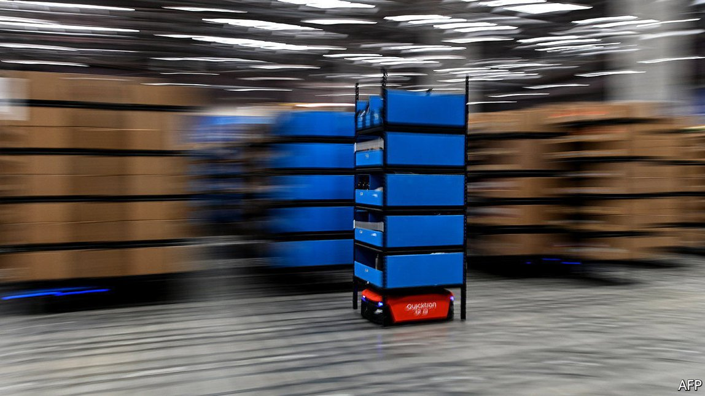
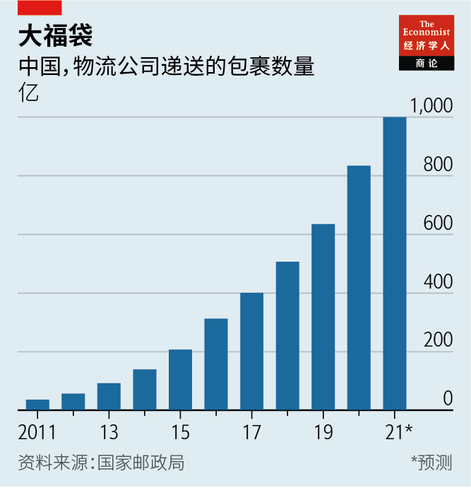
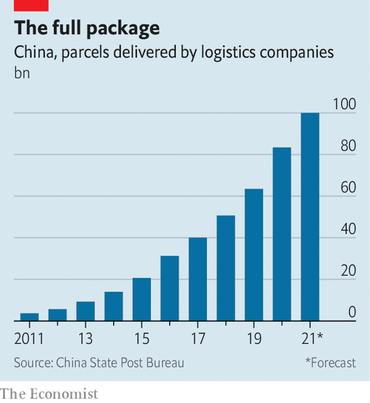

2021-06-03T15:14:58+00:00
方程式赛车
阿里巴巴对阵腾讯：中国电商配送之战
中国科技巨头在物流上各行其道
电商巨头京东的创始人刘强东在2019年宣布取消快递员的底薪，这是在前一年京东物流亏损28亿元、且连续第12年亏损后做出的决定。骑手们从此只能挣揽件提成。刘强东警告称，如果不削减开支，京东物流两年内就会倒闭。
两年过去了，在中国电商市场迅猛增长的推动下，京东物流非但没有倒闭，还一路凯歌（见图表）。其母公司今年第一季度收入同比增长39%，达到2030亿元。5月26日，采用京东物流为客户提供配送服务的新贵对手拼多多公布季度销售额达220亿元，比一年前增长239%。
国家邮政局预计，今年物流公司递送的包裹数量将超过1000亿件，是2018年的两倍。中国2021年的物流总支出预计将达到16万亿元，到2025年将超过19万亿元。这将使中国成为世界最大的物流市场。阿里巴巴和腾讯（为京东大股东）等中国科技巨头因为影响力日增而被政府训诫，但物流业务避过了风头。
参与物流投资交易的律师们说，近期国内外投资者对物流业大举注资。京东物流已经吸引到红杉中国和高瓴资本等大型私募股权投资集团的投资。市场追捧京东物流的热度堪比该公司19万快递员高速接单送货的疯狂劲头。5月21日，京东物流在香港融资32亿美元，成为香港今年第二大IPO。公司股票于5月28日开始交易。投资者押注京东物流打造完全一体化配送网络的做法（类似亚马逊）会胜过顺丰速运（更传统的老牌快递企业，类似联邦快递）的同类服务或是阿里巴巴选择的那种更分散的系统。
京东物流是中国唯一脱胎自电商母公司的大型快递公司。它在2017年从京东剥离成为独立实体，原因之一是这样就能接受其他线上零售商的配送订单。该公司仍然负责配送京东的大部分包裹，但现在它很大一部分收入来自京东以外的订单。京东物流的大部分技术、货车和仓库都是自有的，并直接雇用员工，这样就可以确保在加快配送速度的同时还能监控质量。京东物流运营着中国最大的综合物流系统，覆盖一件商品的整个运输旅程，包括一个位于上海的全自动化履单中心和无人配送车。该系统还可以逆向传递信息，把客户反馈发送给产品设计者。京东物流表示，这有助于它打造出更好的产品和提升品牌。
阿里巴巴控股的菜鸟与之不同。它并不拥有其配送网络内的许多物流资产，而是让雇有约300万名快递员的约3000家物流公司接入菜鸟平台。它的目标是整合和精简中国各地已有的大量快递资源，而非打造自家资源。菜鸟已与多数大型物流公司建立了合作，并接受了它们的投资。阿里巴巴则已购入几家大型物流公司的少数股权，以加大对该行业的影响力。菜鸟不是上市公司，没有披露太多运营细节，同样也没有披露详细的盈利情况。
在收入方面，京东物流和菜鸟都落后于顺丰。与京东物流类似，顺丰经营自己的网络。它在“限时”快递业务上依然保持领先，这类服务要求快递员按指定时间快速完成取件和配送。有别于京东和菜鸟，顺丰与美国联邦快递一样不是科技行业出身，因而缺乏对手的技术优势。
瑞银的连沛堃认为，哪种模式能胜出最终将取决于谁能更好地控制成本。京东物流为赢得京东以外的更多业务可能不得不进一步降低价格。分析师预测，未来三年京东物流可能总共亏损120亿元，要到2024年才能盈利。顺丰则正投入巨资以在技术上追赶京东和菜鸟。自4月发布盈利警告以来，顺丰的股价已下跌了约一半，预计第一季度将录得至少9亿元的净亏损。投行杰富瑞指出，顺丰出现的问题是价格战持续的一个明显迹象。
从长远来看，菜鸟的轻资产模式可能有利于它控制支出。但在目前，它也被认为存在成本控制问题。与竞争对手一样，它必须抵御在冷链配送和末端配送等领域提供低价专门服务的新对手。据券商盛博的数据，近年来，美国的平均快递价格每年增长约5%。而在中国，过去十年里快递价格平均每年下跌10%。随着中国的网购买家越来越快地收到货物，物流投资者可能要准备好等待更久才能收到回报。
2021-06-03T15:14:58+00:00
Formula races
Alibaba v Tencent: the battle for China’s e-commerce deliveries
When it comes to logistics, Chinese tech giants take divergent routes
IN 2019 RICHARD LIU told couriers working for JD.com that the Chinese e-commerce giant he founded would cancel their base pay after a 2.8bn yuan ($438m) loss the previous year, its 12th consecutive one in the red. Riders would make only a commission on deliveries. If the company did not cut back on spending, Mr Liu warned, it would go bust in two years.
Far from collapsing, two years on JD Logistics, JD.com’s delivery division, is on a roll, fuelled by a boom in Chinese e-commerce (see chart). Its parent company’s revenues jumped by 39%, year on year, in the first quarter, to 203bn yuan. On May 26th Pinduoduo, an upstart rival that also offers customers delivery by JD Logistics couriers, reported quarterly sales of 22bn yuan, 239% higher than a year ago.
The State Post Bureau expects logistics companies to deliver more than 100bn parcels this year, twice as many as in 2018. Overall spending on logistics in China is projected to hit 16trn yuan in 2021 and surpass 19trn yuan by 2025. That would make it the world’s largest market. The logistics business has also avoided the worst of the crackdown against Chinese big tech, which has seen firms such as Alibaba and Tencent (which owns a large stake in JD.com) taken to task by the Communist authorities over their growing power.
Domestic and foreign investors have been pouring money into the industry, say lawyers working on deals involving such businesses. JD Logistics has attracted investments from big private-equity groups such as Sequoia China and Hillhouse Capital. The market buzz around the firm is as frenetic as the pace at which its 190,000 workers fulfil and ferry orders. On May 21st it raised $3.2bn in Hong Kong’s second-largest initial public offering this year. Its shares are scheduled to begin trading on May 28th. The company’s backers are betting that its Amazon-like approach of creating a fully integrated delivery network has more mileage than a similar offering from SF Express, a stodgier incumbent similar to FedEx, or a rival model championed by Alibaba, which has plumped for a more distributed system.
JD Logistics is the only large Chinese delivery service to grow out of an e-commerce parent. It became a separate entity from JD.com in 2017, in part so that it could take orders from other online retailers. It still delivers the bulk of JD.com’s packages but a large chunk of its revenues now comes from orders outside the group. By owning much of its technology, lorries and warehouses, and directly employing staff, the firm has been able to ensure faster delivery times while monitoring quality. It operates China’s largest integrated logistics system, covering a good’s entire journey and including a fully autonomous fulfilment centre in Shanghai and driverless vehicles. The system can also flip into reverse, sending customer feedback to product designers that, JD Logistics claims, helps it produce better products and bolster brands.
Contrast that with Cainiao, in which Alibaba has a controlling stake. It does not own many of the logistics assets in its network. Instead it allows around 3,000 logistics companies employing some 3m couriers to plug into its platform. Its aim is to integrate and streamline the vast delivery resources that already exist across China, rather than build its own. The company has teamed up with most large logistics services—and taken investments from them as well. Alibaba, for its part, has bought minority stakes in several large operators as a means of exerting more influence over the industry. Cainiao is not publicly listed and does not disclose many operational details or, for that matter, how exactly it makes money.
In terms of revenues, both JD Logistics and Cainiao trail SF Express. Similarly to JD Logistics, that firm operates its own network. It still leads the market in “time-definite” delivery, a service that requires couriers to pick up and drop off parcels on a rapid, predetermined timetable. Like FedEx in America but unlike JD and Cainiao, it did not emerge from the tech industry, so lacks its rivals’ technological chops.
Which model emerges victorious will ultimately depend on which best controls costs, thinks Eric Lin of UBS, a bank. JD Logistics may have to lower prices further as it tries to get more business beyond JD.com. Analysts predict it could lose a combined 12bn yuan over the next three years, and turn a profit only in 2024. SF Express is spending heavily to try to match JD’s and Cainiao’s tech prowess. Its share price has fallen by around half since it issued a profit warning in April; it is expected to record a net loss of at least 900m yuan in the first quarter. Jefferies, an investment bank, points to SF Express’s troubles as a clear sign of an ongoing price war.
In the long run Cainiao’s asset-light model may enable it to keep spending in check. But for the time being it, too, is thought to be having trouble containing costs. Like its rivals it must fend off new specialist competitors offering cut-price services in areas like cold-chain and last-mile delivery. Average delivery prices in America have increased by about 5% annually in recent years, according to Bernstein, a broker. In China they have been falling at an average rate of 10% for the past decade. As China’s online shoppers get their goods ever more quickly, investors may need to brace for longer waiting times before their logistics returns finally arrive. ■
2021-06-03T15:14:58+00:00
方程式賽車
阿里巴巴對陣騰訊：中國電商配送之戰
中國科技巨頭在物流上各行其道
電商巨頭京東的創始人劉強東在2019年宣布取消快遞員的底薪，這是在前一年京東物流虧損28億元、且連續第12年虧損後做出的決定。騎手們從此只能掙攬件提成。劉強東警告稱，如果不削減開支，京東物流兩年內就會倒閉。
兩年過去了，在中國電商市場迅猛增長的推動下，京東物流非但沒有倒閉，還一路凱歌（見圖表）。其母公司今年第一季度收入同比增長39%，達到2030億元。5月26日，採用京東物流為客戶提供配送服務的新貴對手拼多多公布季度銷售額達220億元，比一年前增長239%。
國家郵政局預計，今年物流公司遞送的包裹數量將超過1000億件，是2018年的兩倍。中國2021年的物流總支出預計將達到16萬億元，到2025年將超過19萬億元。這將使中國成為世界最大的物流市場。阿里巴巴和騰訊（為京東大股東）等中國科技巨頭因為影響力日增而被政府訓誡，但物流業務避過了風頭。
參與物流投資交易的律師們說，近期國內外投資者對物流業大舉注資。京東物流已經吸引到紅杉中國和高瓴資本等大型私募股權投資集團的投資。市場追捧京東物流的熱度堪比該公司19萬快遞員高速接單送貨的瘋狂勁頭。5月21日，京東物流在香港融資32億美元，成為香港今年第二大IPO。公司股票於5月28日開始交易。投資者押注京東物流打造完全一體化配送網絡的做法（類似亞馬遜）會勝過順豐速運（更傳統的老牌快遞企業，類似聯邦快遞）的同類服務或是阿里巴巴選擇的那種更分散的系統。
京東物流是中國唯一脫胎自電商母公司的大型快遞公司。它在2017年從京東剝離成為獨立實體，原因之一是這樣就能接受其他線上零售商的配送訂單。該公司仍然負責配送京東的大部分包裹，但現在它很大一部分收入來自京東以外的訂單。京東物流的大部分技術、貨車和倉庫都是自有的，並直接僱用員工，這樣就可以確保在加快配送速度的同時還能監控質量。京東物流運營着中國最大的綜合物流系統，覆蓋一件商品的整個運輸旅程，包括一個位於上海的全自動化履單中心和無人配送車。該系統還可以逆向傳遞信息，把客戶反饋發送給產品設計者。京東物流表示，這有助於它打造出更好的產品和提升品牌。
阿里巴巴控股的菜鳥與之不同。它並不擁有其配送網絡內的許多物流資產，而是讓雇有約300萬名快遞員的約3000家物流公司接入菜鳥平台。它的目標是整合和精簡中國各地已有的大量快遞資源，而非打造自家資源。菜鳥已與多數大型物流公司建立了合作，並接受了它們的投資。阿里巴巴則已購入幾家大型物流公司的少數股權，以加大對該行業的影響力。菜鳥不是上市公司，沒有披露太多運營細節，同樣也沒有披露詳細的盈利情況。
在收入方面，京東物流和菜鳥都落後於順豐。與京東物流類似，順豐經營自己的網絡。它在“限時”快遞業務上依然保持領先，這類服務要求快遞員按指定時間快速完成取件和配送。有別於京東和菜鳥，順豐與美國聯邦快遞一樣不是科技行業出身，因而缺乏對手的技術優勢。
瑞銀的連沛堃認為，哪種模式能勝出最終將取決於誰能更好地控制成本。京東物流為贏得京東以外的更多業務可能不得不進一步降低價格。分析師預測，未來三年京東物流可能總共虧損120億元，要到2024年才能盈利。順豐則正投入巨資以在技術上追趕京東和菜鳥。自4月發布盈利警告以來，順豐的股價已下跌了約一半，預計第一季度將錄得至少9億元的凈虧損。投行傑富瑞指出，順豐出現的問題是價格戰持續的一個明顯跡象。
從長遠來看，菜鳥的輕資產模式可能有利於它控制支出。但在目前，它也被認為存在成本控制問題。與競爭對手一樣，它必須抵禦在冷鏈配送和末端配送等領域提供低價專門服務的新對手。據券商盛博的數據，近年來，美國的平均快遞價格每年增長約5%。而在中國，過去十年里快遞價格平均每年下跌10%。隨着中國的網購買家越來越快地收到貨物，物流投資者可能要準備好等待更久才能收到回報。